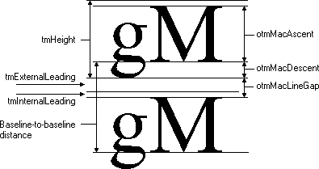

In addition to retrieving character-width data for individual characters, applications also need to compute the width and height of entire strings. Two functions retrieve string-width and height measurements: GetTextExtentPoint32, and GetTabbedTextExtent. If the string does not contain tab characters, an application can use the GetTextExtentPoint32 function to retrieve the width and height of a specified string. If the string contains tab characters, an application should call the GetTabbedTextExtent function.
Applications can use the GetTextExtentExPoint function for word-wrapping operations. This function returns the number of characters from a specified string that fit within a specified space.
Some applications determine the line spacing between text lines of different sizes by using a font's maximum ascender and descender. An application can retrieve these values by calling the GetTextMetrics function and then checking the tmAscent and tmDescent members of the TEXTMETRIC.
The maximum ascent and descent are different from the typographic ascent and descent. In TrueType and OpenType fonts, the typographic ascent and descent are typically the top of the f glyph and bottom of the g glyph. An application can retrieve the typographic ascender and descender for a TrueType or OpenType font by calling the GetOutlineTextMetrics function and checking the values in the otmMacAscent and otmMacDescent members of the OUTLINETEXTMETRIC structure.
The following figure shows the difference between the vertical text metric values returned in the NEWTEXTMETRIC and OUTLINETEXTMETRIC structures. (The names beginning with otm are members of the OUTLINETEXTMETRIC structure.)

An application can retrieve the physical dimensions of a TrueType or OpenType font by calling the GetOutlineTextMetrics function. An application can retrieve the physical dimensions of any other font by calling the GetTextMetrics function. To determine the dimensions of an output device, an application can call the GetDeviceCaps function. GetDeviceCaps returns both physical and logical dimensions.
A logical inch is a measure the system uses to present legible fonts on the screen and is approximately 30 to 40 percent larger than a physical inch. The use of logical inches precludes an exact match between the output of the screen and printer. Developers should be aware that the text on a screen is not simply a scaled version of the text that will appear on the page, particularly if graphics are incorporated into the text.
Â
Â